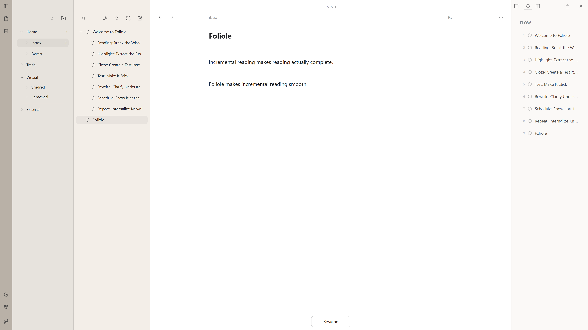

Make reading actually complete
An approachable incremental reading app

Watch Foliole demo on YouTubeOpen Source
The code is open source. Anyone can review the implementation, build it from source, or contribute improvements

Open Data
Uses a SQLite database and provides a Markdown mirror, making materials easier to read, migrate, and reuse

Local First
No account system. No central cloud sync. All data stays on your personal devices; devices sync over the local network

Native Incremental Reading
Built around Piotr Woźniak’s incremental reading ideas, with a native workflow for extracting passages, creating cloze deletions, and refining materials without leaving the reading flow

Integrated FSRS Scheduling
Integrates FSRS (Free Spaced Repetition Scheduler), an open and efficient review scheduling algorithm

Bring Reading Materials Together
Handles reading materials from different sources, whether local files, web documents, notes managed in Obsidian, or materials exported from Readwise Reader

Index External Documents
Indexes other local folders on your computer without copying or moving the original files, creating an external document library that can be searched, viewed, and used across supported clients

Complex Content Support
Supports Markdown, PDF, EPUB, LaTeX math, code blocks, and other content rendering needs

Acknowledgements
Special thanks
Piotr Woźniak Jarrett Ye
Without SuperMemo, incremental reading, and FSRS, Foliole would not exist
Many thanks to the following open-source projects and components:
better-sqlite3 · Capacitor · CodeMirror 6 · Drizzle ORM · Electron · React · SQLite · TypeScript · Vite